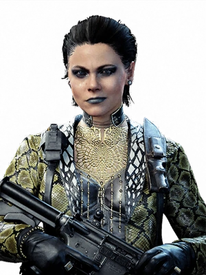

CHARACTER INFORMATION

Helen Park entered Oxford at the age of 16 where she pursued a doctorate in international relations. After her older brother was killed in an IRA car bomb attack in London, she dropped out from the program and began studying the origins and motivations of international para-military organizations, eventually leading her to join the ranks of MI6. Park earned her place by proving her prowess as an expert strategist, becoming one of MI6's youngest yet most talented logistics agent. She also displayed proficiency in chemistry, biology, psychological manipulation, and is a talented hypnotist.
After several years of international assignments, Park was placed on protection service for two British scientists who were set to travel to a clandestine location to collaborate with the CIA on an officially sponsored project. During this assignment, she met Russell Adler, a key figure in the new program, and personally took on an expanded role in its development.
During her career, Park worked with a fellow MI6 agent codenamed "Madam Shell" for three years, who she suspected had become a rogue double agent. Once Madam Shell realized Park's suspicions, she attempted to kill her, and left a scar across her neck as a parting gift. After the incident, Park kept a scarf around her to neck to hide the scar, and blamed herself for being naïve at the time. Unbeknownst to her at the time, Mossad fixer Eleazar "Lazar" Azoulay would track down Madam Shell and kill her by decapitation, as retaliation for the scar she gave Park.
In 1981, Park is recruited into joining Russell Adler's team to stop the infamous spy Perseus, being recruited alongside Lazar, Lawrence Sims, Alex Mason, and Frank Woods. Adler, Mason and Woods captured one of Perseus' agents and failed to interrogate him by known means. In response, Park advised Adler to submit the subject to the MK Ultra program, where she used a combination of psychological torture, neuroactive chemicals and hypnosis to reprogram the subject's mind, implanting memories of them working with Adler and Sims during the Vietnam War, as well as a hypnotic phrase that triggered the memories' reproduction and pushed the subject to obey subsequent commands.